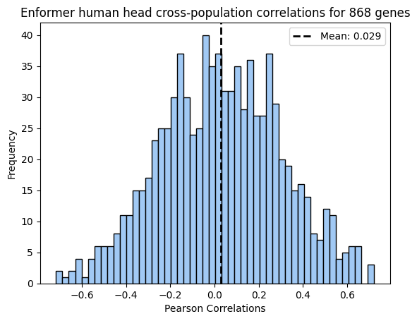

Personalized Prediction Correlations for 868 rn7 genes
Author
Sabrina Mi
Published
September 1, 2023
We ran the personalized Enformer pipeline 868 genes for high variation in Br rats and number of eQTLs. There are too many predictions to concatenate iteratively, so I wrote collect_predictions.py to parallelize in a submitted job.
Note: This script appends predictions to the h5 in parallel, I first initialized the h5 file with individuals list to be paired with all gene expression datasets.
Code
import h5pyimport pandas as pdproject_dir ="/home/s1mi/Br_predictions/predictions_folder/personalized_Br_selected_genes"obs_gene_expr = pd.read_csv("/home/s1mi/enformer_rat_data/expression_data/Brain.rn7.expr.tpm.bed", sep="\t", nrows=1)with h5py.File(f"{project_dir}/selected_genes_mouse_and_human_predictions.h5", "w") asfile:file.attrs["index"] = obs_gene_expr.columns.to_list()[4:]import seaborn as snscolors = sns.color_palette("pastel")
After my parsl job was stuck in the queue for two days, I decided to forgo parsl and append the predictions from the login node. This took many interrupted attempts, but was sadly the better option. The non-parallelized code is below:
Code
#### LIBRARIES AND DEFINITIONSimport pandas as pdimport numpy as npimport h5pyproject_dir ="/grand/TFXcan/imlab/users/sabrina/Br_predictions/predictions_folder/personalized_Br_selected_genes"predictions_dir =f"{project_dir}/predictions_2023-09-02/enformer_predictions"obs_gene_expr = pd.read_csv("/home/s1mi/enformer_rat_data/expression_data/Brain.rn7.expr.tpm.bed", sep="\t", header=0, index_col='gene_id')annot_df = pd.read_csv("/home/s1mi/enformer_rat_data/annotation/rn7.gene.txt", sep="\t", header=0, index_col='geneId')#### GET LIST OF GENESwithopen(f"gene_list.txt", "r") asfile: gene_list =file.read().splitlines()print(len(gene_list), "genes with enformer predictions")#### JOIN WITH ENFORMER PREDICTIONS FUNCTIONdef collect_predictions(gene):with h5py.File(f"{project_dir}/selected_genes_mouse_and_human_predictions.h5", "a") as output_file:if gene notin output_file.keys():### INITIALIZE EXPRESSION MATRIX WITH OBSERVED DATA expr_df = pd.DataFrame({"observed": obs_gene_expr.loc[gene][3:].astype("float32")}) ### READ PREDICTIONS gene_annot = annot_df.loc[gene] interval =f"chr{gene_annot['chromosome']}_{gene_annot['tss']}_{gene_annot['tss']}" human_predicted = [] mouse_predicted = []for individual in expr_df.index:with h5py.File(f"{predictions_dir}/{individual}/haplotype0/{interval}_predictions.h5", "r") as input_file: human_prediction = input_file["human"][446:450, 4980] mouse_prediction = input_file["mouse"][446:450, 1300] human_predicted.append(np.average(human_prediction)) mouse_predicted.append(np.average(mouse_prediction))### JOIN IN DATAFRAME expr_df["human predicted"] = human_predicted expr_df["mouse predicted"] = mouse_predicted### WRITE TO h5 output_file[gene] = expr_df#### JOIN CONCURRENTLY ACROSS GENESfor gene in gene_list: collect_predictions(gene)print("Finished writing expression matrices for", len(gene_list), "genes")
Read Processed Predictions
Code
import h5pyimport pandas as pdimport matplotlib.pyplot as pltimport numpy as npfrom scipy import statsproject_dir ="/grand/TFXcan/imlab/users/sabrina/Br_predictions/predictions_folder/personalized_Br_selected_genes"withopen(f"gene_list.txt", "r") asfile: gene_list =file.read().splitlines()expr_dict = {}with h5py.File(f"{project_dir}/selected_genes_mouse_and_human_predictions.h5", "r") asfile: index =file.attrs["index"]for gene infile.keys(): matrix =file[gene][:] expr_dict[gene] = pd.DataFrame(matrix, index = index, columns = ["observed", "human predicted", "mouse predicted"])
/soft/datascience/conda/2022-09-08/mconda3/lib/python3.8/site-packages/scipy/stats/_stats_py.py:4424: ConstantInputWarning: An input array is constant; the correlation coefficient is not defined.
warnings.warn(stats.ConstantInputWarning(msg))
/soft/datascience/conda/2022-09-08/mconda3/lib/python3.8/site-packages/scipy/stats/_stats_py.py:4878: ConstantInputWarning: An input array is constant; the correlation coefficient is not defined.
warnings.warn(stats.ConstantInputWarning(warn_msg))
/soft/datascience/conda/2022-09-08/mconda3/lib/python3.8/site-packages/scipy/stats/_stats_py.py:4424: ConstantInputWarning: An input array is constant; the correlation coefficient is not defined.
warnings.warn(stats.ConstantInputWarning(msg))
/soft/datascience/conda/2022-09-08/mconda3/lib/python3.8/site-packages/scipy/stats/_stats_py.py:4878: ConstantInputWarning: An input array is constant; the correlation coefficient is not defined.
warnings.warn(stats.ConstantInputWarning(warn_msg))
ENSRNOG00000053502 is the only gene with NaN correlations, so we can still plot results from 867 genes.
# Plot a histogramplt.hist(pearson_corr_by_gene["human"], bins=50, edgecolor='black', color=colors[0]) # 'bins' determines the number of bins or barsplt.title('Correlations between Enformer human head predictions and observed expression for 868 genes')plt.xlabel('Pearson Correlations')plt.ylabel('Frequency')mean = np.mean(pearson_corr_by_gene["human"])plt.axvline(mean, color='black', linestyle='dashed', linewidth=2, label=f'Mean: {mean:.3f}')plt.legend()# Display the plotplt.show()
Code
# Plot a histogramplt.hist(pearson_corr_by_gene["mouse"], bins=50, edgecolor='black', color=colors[0]) # 'bins' determines the number of bins or barsplt.title('Correlations between Enformer mouse head predictions and observed expression for 868 genes')plt.xlabel('Pearson Correlations')plt.ylabel('Frequency')mean = np.mean(pearson_corr_by_gene["mouse"])plt.axvline(mean, color='black', linestyle='dashed', linewidth=2, label=f'Mean: {mean:.3f}')plt.legend()# Display the plotplt.show()
Code
# Plot a histogramplt.hist(spearman_corr_by_gene["human"], bins=50, edgecolor='black', color=colors[0]) # 'bins' determines the number of bins or barsplt.title('Correlations between Enformer human head predictions and observed expression for 868 genes')plt.xlabel('Spearman Correlations')plt.ylabel('Frequency')mean = np.mean(spearman_corr_by_gene["human"])plt.axvline(mean, color='black', linestyle='dashed', linewidth=2, label=f'Mean: {mean:.3f}')plt.legend()# Display the plotplt.show()
Code
# Plot a histogramplt.hist(spearman_corr_by_gene["mouse"], bins=50, edgecolor='black', color=colors[0]) # 'bins' determines the number of bins or barsplt.title('Correlations between Enformer mouse head predictions and observed expression for 868 genes')plt.xlabel('Spearman Correlations')plt.ylabel('Frequency')mean = np.mean(spearman_corr_by_gene["mouse"])plt.axvline(mean, color='black', linestyle='dashed', linewidth=2, label=f'Mean: {mean:.3f}')plt.legend()# Display the plotplt.show()

Compare Human and Mouse Model Correlations
Code
# Fit a linear regression line to the data (calculate slope)x = spearman_corr_by_gene["human"].valuesy = spearman_corr_by_gene["mouse"].valuesslope, intercept = np.polyfit(x, y, 1)# Create the plotplt.scatter(x, y, label='Genes', marker='o', color=colors[0])plt.plot(x, slope * x + intercept, '--', color="black", label=f'Best Fit Line: y = {slope:.3f}x + {intercept:.3f}')plt.plot(x, x, '--', color="grey", label=f'One-to-One Line')plt.title("Predicted vs Observed Spearman Correlations ")# Add labels and legendplt.xlabel('Human Head')plt.ylabel('Mouse Head')plt.legend()# Show the plotplt.show()
Code
human_sign_genes = spearman_pval_by_gene.index[spearman_pval_by_gene["human"] <0.05/868]mouse_sign_genes = spearman_pval_by_gene.index[spearman_pval_by_gene["mouse"] <0.05/868]human_unique = human_sign_genes.difference(mouse_sign_genes)mouse_unique = mouse_sign_genes.difference(human_sign_genes)overlap = human_sign_genes.intersection(mouse_sign_genes)# Data for the bar chartcategories = ['Overlap', 'Unique to Human', 'Unique to mouse']counts = [len(overlap), len(human_unique), len(mouse_unique)]# Create the bar chartplt.figure(figsize=(8, 6))bars = plt.bar(categories, counts, color=colors, width=0.4)plt.xlabel('Model')plt.ylabel('Counts')plt.title('Genes with Significant Prediction Performance')# Add numbers over each barfor bar, count inzip(bars, counts): plt.text(bar.get_x() + bar.get_width() /2, bar.get_height() +1, str(count), ha='center', va='bottom')plt.show()
Plot Predicted vs Observed Expression
First, we’ll plot the best and worst genes, and then a random sample.
Code
def plot_pearson_corr(gene): corr = pearson_corr_by_gene.loc[gene]["human"] plt.scatter(expr_dict[gene]["observed"], expr_dict[gene]["human predicted"], marker='o', color=colors[0], label=f"Correlation: {corr:.3f}")# Add labels and title plt.xlabel('Observed') plt.ylabel('Predicted') plt.title(gene)# Show the plot plt.legend() plt.show()def plot_spearman_corr(gene): x = expr_dict[gene]["observed"] y = expr_dict[gene]["human predicted"] corr, pval = stats.spearmanr(x, y)#plt.scatter(x, y, marker='o', color='blue', label=f"Correlation: {corr:.3f}\nP-value: {pval}") plt.scatter(stats.rankdata(x), stats.rankdata(y), marker='o', color=colors[1], label=f"Correlation: {corr:.3f}")# Add labels and title plt.xlabel('Observed Ranks') plt.ylabel('Predicted Ranks') plt.title(gene)# Show the plot plt.legend() plt.show()